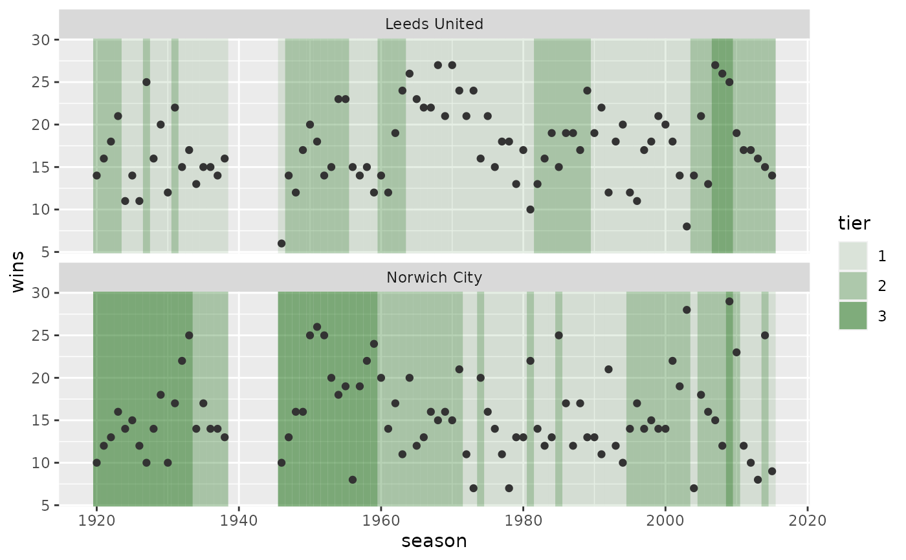
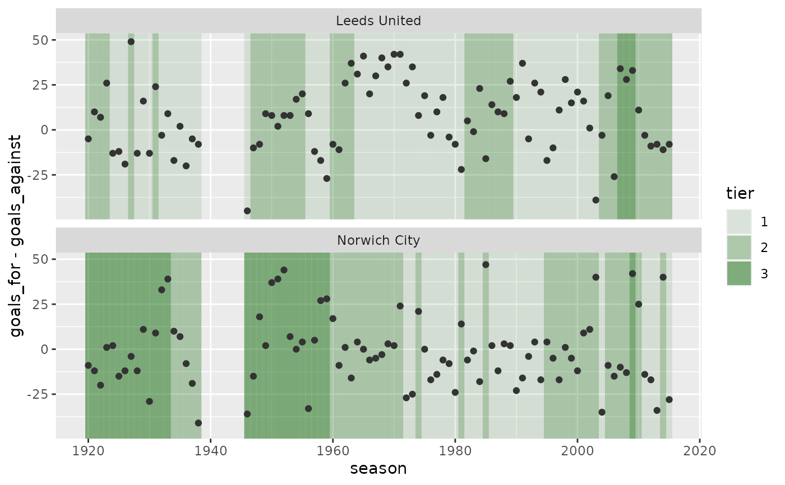

Returns a ggplot:
seasonon the x-axisfaceted by
teamhas two layers:
rectangles shaded by tier
points showing some measure (default
wins) on the y-axis
Of the countries included in uss_countries(), only "england" has data for
more than one tier.
Arguments
- data_seasons,
data frame created using
uss_make_seasons_final().- aes_y,
<data-masking>expression used for the y-aesthetic.- ncol,
integer-ish number of columns in facet.
Examples
leeds_norwich <-
uss_get_matches("england") |>
uss_make_teams_matches() |>
dplyr::filter(team %in% c("Leeds United", "Norwich City")) |>
uss_make_seasons_final() |>
dplyr::arrange(team, season)
# use default (wins)
uss_plot_seasons_tiers(leeds_norwich)

# use custom expression
uss_plot_seasons_tiers(leeds_norwich, goals_for - goals_against)
